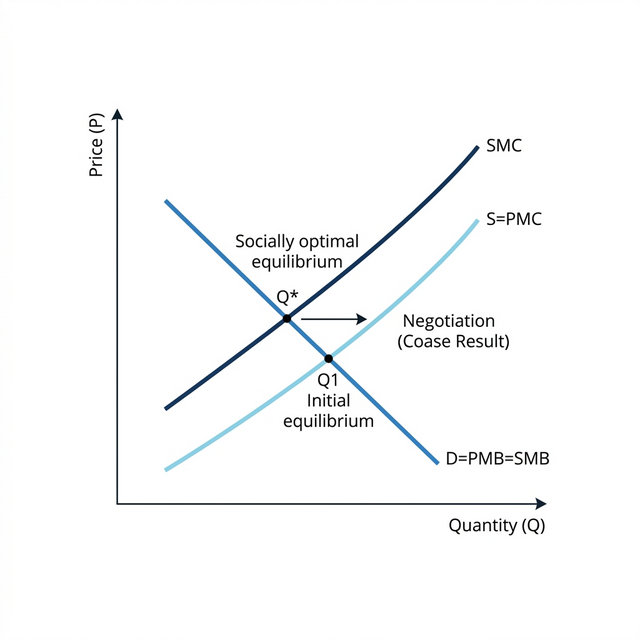
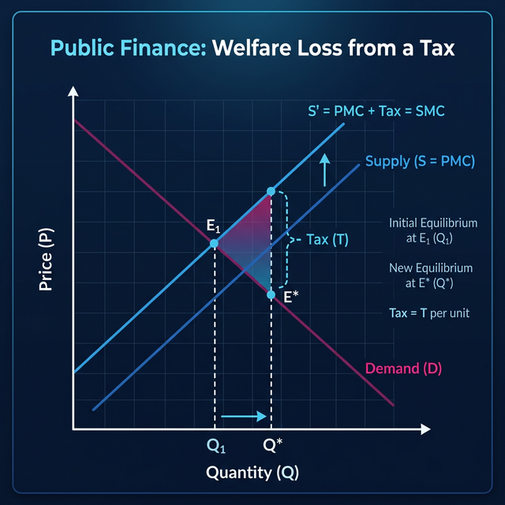

4.3 — Internalizing Externalities
Chapter 4: Public Goods & Externalities
Two Main Solutions
When the free market breaks down because of side-effects (externalities), we have two big ways to fix it:
1. Private Solutions
Coase Theorem (Coase, 1960)
The market might actually heal itself through private deals and bargaining, with zero help from the government.
2. Public Solutions
The government steps in like a referee using:
- Price Rules: Taxes (punishments) & Subsidies (rewards).
- Quantity Rules: Hard limits (Quotas) & total bans.
- Trading Tickets: Cap-and-trade systems (buying the right to pollute).
The Coase Theorem (Private Fix)
Economist Ronald Coase asked a brilliant question: Do we really need the government? Can people just talk to each other and fix the price of the damage?
Coase Theorem — Part I: If the law is super clear about who owns the property, and if bargaining is perfectly free and easy, then the two sides will naturally talk and agree on the perfect, fair solution.
Coase Theorem — Part II: The final amount of pollution will be identical no matter who owns the property. The only difference is who pays money to whom (who gets richer).
Example: The Dirty River
- Case 1: The innocent swimmers own the river. The dirty factory must beg and pay the swimmers for permission to drop waste. The payment exactly equals the Damage Cost (MD).
- Case 2: The factory owns the river. The swimmers are forced to collect money to pay the factory to stop polluting. The payment exactly equals the Damage Cost (MD).
➡️ The Magic Result: In both completely opposite situations, the final amount of pollution agreed upon is exactly the same golden number ($Q^*$).
Reading the Coase Graph

How to read: The greedy market starts at $Q_1$, completely ignoring the damage. But once they sit down and negotiate, they slowly push the dial backward to $Q^*$, where society is perfectly healthy ($SMC = SMB$).
Why Coase fails in real life (The Bugs):
- "Who owns this?": It is impossible to figure out who "owns" the sky, the ocean, or the air you breathe.
- The Nightmare of Organizing: Talking is expensive. You cannot easily invite 10 million car drivers into one room to negotiate a deal with 50 million breathing citizens. For massive global problems (like climate change), the Coase trick is physically impossible.
Public Fixes: Price Rules (Taxes)
Because Coase usually fails, the government must act. The smartest trick is Price Regulation — changing how people behave by hitting their wallets.
Pigouvian Tax (Pigou, 1920): A "healing tax". You force the company to pay a tax that exactly perfectly matches the pain they cause. Suddenly, their selfish cost becomes the true social cost ($PMC$ becomes exactly $SMC$).

Tax Magic: Look at the graph. The heavy tax pushes the company's supply curve strongly upward by the exact size of the pain ($MD$). This perfectly crushes their production back from a dangerous $Q_1$ to the very safe $Q^*$.
Tickets and Fines: This works just like a tax. A company will quickly invent a cleaner machine if they are terrified of paying a massive $1$ million dollar fine.
Public Fixes: Quantity Rules (Laws)
Instead of playing games with money, the government can just use absolute police power to ban things.
- Output Rules: "You are only allowed to catch 1,000 fish per month. Period." (Quotas).
- Input Rules: "You must legally install this specific smoke filter on your chimney."
- Complete Bans: "Zero smoking in restaurants. You go to jail."
Fighting: Taxes vs. Bans
In a perfect math textbook, both give the exact same answer. In the real messy world, Taxes give factories freedom to breathe and adapt, but Bans are much safer when the government has no idea how much money people are willing to pay.
How Big Does the Government Need to Be?
The size of the problem decides who takes charge:
- Small Local Problems: Fixed internally by town mayors, voting, and basic democratic laws.
- Massive Global Problems: Climate change or ocean death completely ignore country borders. These demand gigantic alliances like the European Union, the United Nations, or the OECD to write global laws.
Trading Tickets (Cap-and-Trade)
This is a clever hybrid of both rules: The state creates a strict Max Limit (Cap) but lets the factories Buy and Sell (Trade) the right to pollute.
How the game is played: The state prints 1,000 "pollution tickets". Factory A invents a brilliant clean machine, so they don't need their tickets. They excitedly sell their spare tickets to lazy Factory B for a huge pile of money. The environment wins (only 1,000 tickets exist in total), and smart/clean companies get rich.
The Dark Side: Rich companies use bribes to get free tickets. Also, it accidentally creates "death zones" — if Factory B buys all the tickets in the country, the air surrounding Factory B will become highly toxic to the local poor town.
ULTRA RECAP
- Coase: Neighbors can fix it naturally without government, but only if lawyers and talking are cheap.
- Taxes: Forcing factories to pay for the pain through Pigouvian pricing.
- Police Rules: Strict legal bans on quantities (Quotas).
- Pollution Tickets: Blending strict caps with the freedom of buying and selling.